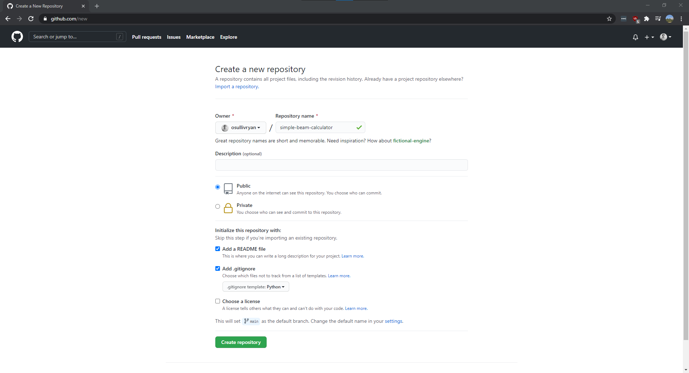

Starting A Project
Remember, we're going to go through an example of creating a new project, simplebeamcalculator. You'll see this throughout.
Creating a Project in Git
For this example we're going to start a project in Github, however the steps are similar in Gitlab.
I'm going to name my project simple-beam-calculator, and then set some defaults for the README and the .gitignore file.

Note
I used "kebab" case for the naming (the dashes between the words "simple", "beam", and "calculator" make it look like a kebab). I prefer this style. It's that simple.
Cloning the project
You'll need to start by cloning this new repository onto your own machine. On the git page you should see the Code dropdown and within that dialog box a link that ends in .git. This is your git repository link. For me it looks like:
git@github.com:osullivryan/simple-beam-calculator.git
Copy it.
I normally keep all of my git projects in the same directory to help me keep track of them all. So I'm going to run this command from within the directory I want the files:
git clone git@github.com:osullivryan/simple-beam-calculator.git
After this you should change into that new directory:
cd simple-beam-calculator
Folder Structure
Folder structure (and in a sense package structure) in Python is hard and confusing. I've found a structure that works well and is reliable, so this is how I'll set us up.
- Create two new directories,
srcandtests.srcstands forsource. - Within
srccreate a directory calledsimplebeamcalculator. This is going to be our main package. - Create an empty
__init__.pyfile withinsrc/simplebeamcalculator. This tells Python to look for source files here.
As your package grows you'll create more folders under src/simplebeamcalculator. For now you should see something like this:
simple-beam-calculator
│ README.md
│ .gitignore
│
└───src
│ └───simplebeamcalculator
│ │ __init__.py
│
└───tests
Initializing Poetry
Poetry is our environment and package manager. It will take care of our packages and python instances for us. We need to initialize it in this new project by running the command:
poetry init
Note
If you chose to name your package in kebab case make sure you remove them in the package name!
In the end I ended up entering these options:
PS C:\Users\osull\git_projects\simple-beam-calculator> poetry init
This command will guide you through creating your pyproject.toml config.
Package name [simple-beam-calculator]: simplebeamcalculator
Version [0.1.0]:
Description []:
Author [Ryan O'Sullivan <osullivryan@gmail.com>, n to skip]:
License []:
Compatible Python versions [^3.9]:
Would you like to define your main dependencies interactively? (yes/no) [yes] no
Would you like to define your development dependencies interactively? (yes/no) [yes] no
Generated file
[tool.poetry]
name = "simplebeamcalculator"
version = "0.1.0"
description = ""
authors = ["Ryan O'Sullivan <osullivryan@gmail.com>"]
[tool.poetry.dependencies]
python = "^3.9"
[tool.poetry.dev-dependencies]
[build-system]
requires = ["poetry-core>=1.0.0"]
build-backend = "poetry.core.masonry.api"
Do you confirm generation? (yes/no) [yes] yes
PS C:\Users\osull\git_projects\simple-beam-calculator>
Finally you should be able to install the Python environment:
poetry install
And you should be able to start python by running the following:
poetry run python
Installing Packages
Like pip, poetry will add packages that you can use in your environment. We're going to need a couple for this project:
poetry add numpy, matplotlib, scipy
Great! I'll go over the packages we just installed later, but as a Mechanical Engineer you'll probably be using those fairly often.
Now let's add some packages that are really useful for writing code. Again, I'll explain them later.
poetry add black, flake8, pytest